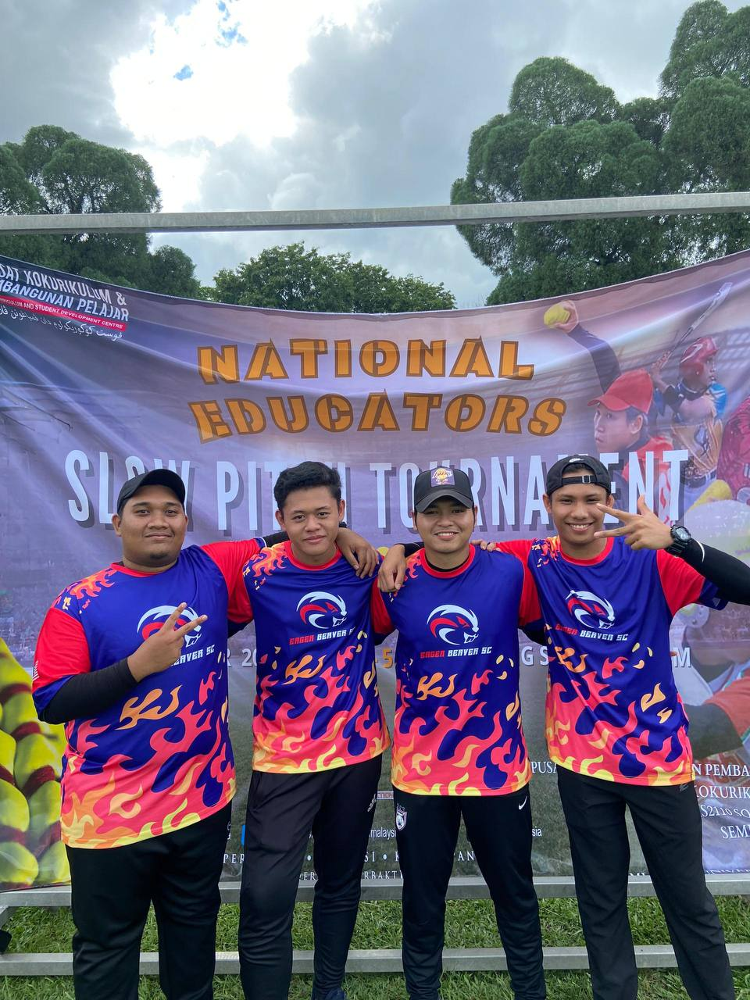
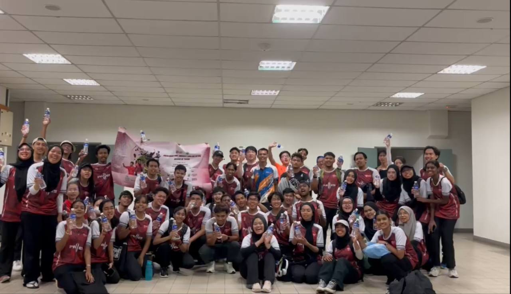
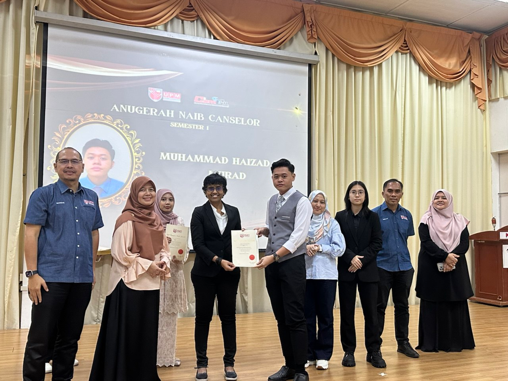
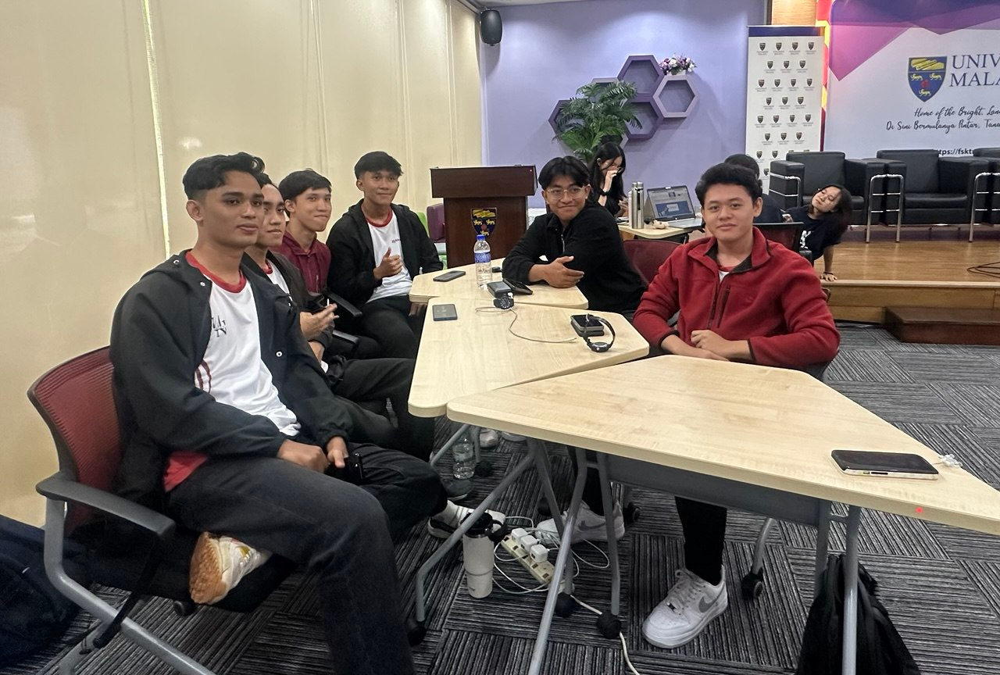
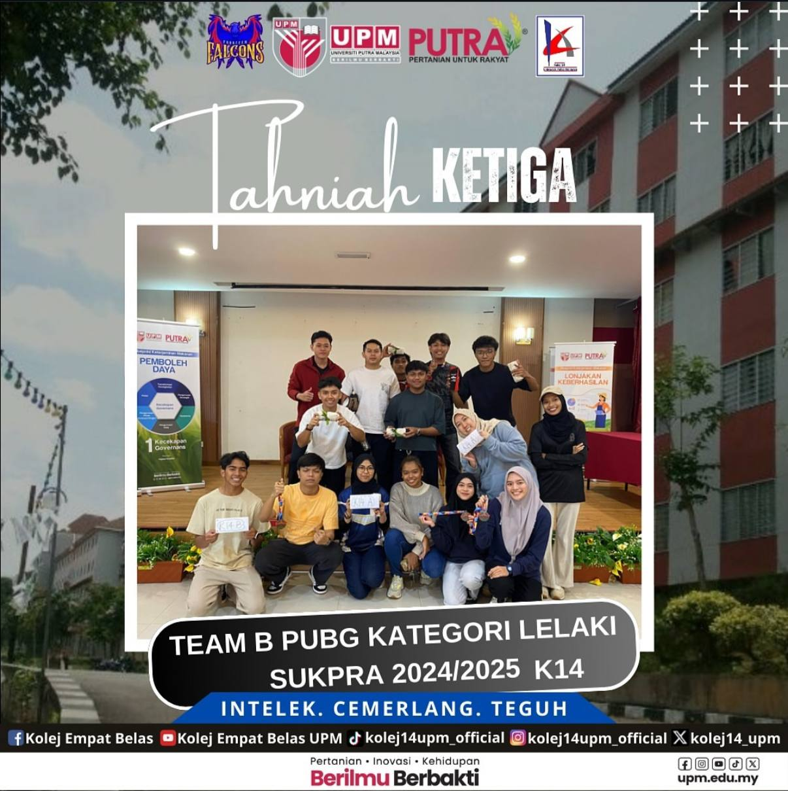

| Image | Activity | Description |
|---|---|---|
|  | National Educators Slow Pitch Tournament | During my first year at UPM, I joined a community program where our group agreed to organize a slow-pitch tournament among teachers in every state, making it a national-level event. My friends and I, as the technical committee, played an important role in handling the technical aspects, such as field setup, umpiring, and managing the scoreboard. This program taught me how to work effectively with diverse groups of people to achieve common goals, as well as the rules of softball. |
|  | Kejohanan Hoki Terbuka UPM-XBJ HC 5's Bawah 12 Tahun |
Joining the hockey 5's tournament program for kids as the leader of the multimedia AJK has been an enriching experience that allowed me to develop various skills. My responsibilities included creating posters, handling marketing efforts, and spreading advertisements to promote the event, which enhanced my graphic design and digital marketing skills. Additionally, serving as the program’s photographer gave me hands-on experience in capturing high-quality action shots and event photography. Through this role, I improved my creativity, attention to detail, and ability to work under pressure to capture the best moments. Managing multimedia also strengthened my teamwork, communication, and time management skills as I collaborated with others to ensure the tournament’s success. Overall, this program has been a valuable opportunity for me to grow both creatively and professionally. |
|  | Majlis Anugerah Prestij FCSIT | Alhamdulilah, during the ceremony I have was awarded two awards which are Vice Chansellor Award for first semester and Dean List Award for second semester. This ceremony gave me motivation to keep learning ang score 4.000 GPPA for the next semester. |
|  | Game Of Geeks Quarter Final MLBB | Me and my friends was joined a competition called Game Of Geeks that organised by Faculty of Computer Science and Technology. My team was qualified to the quarter final located at University Malaya (UM); however, we only managed to get 4th place after defeated by Univeristy Kebangsaan Malaysia (UKM) but we still proud of ourselve because we have through a very long journey to be at this place and always keep trying. |
|  | Sukpra PUBG Mobile | fullname of Sukpra is Kejohanan Sukan Putra where my team and I joined and be representative of our college which is college 14 to fight with others college. The day of competition was 2 days and my team was managed to get 3rd place out of 15 teams. Although we did not be the champion but we still grateful and proud of ourselve |
© 2025 Haizad. All rights reserved.